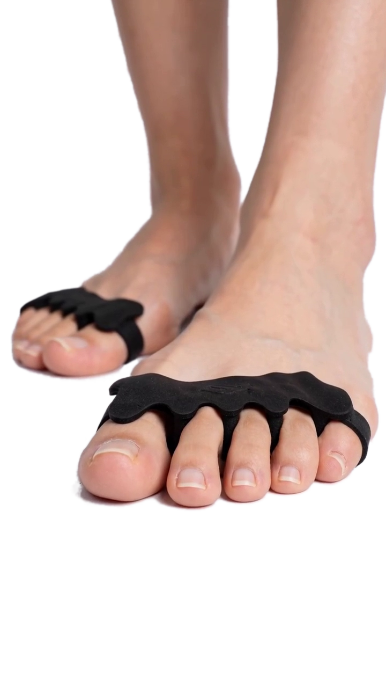

Los que uso en consulta para que tus dedos recuperen su espacio y tus pies, su fuerza.
Siéntate con los pies apoyados en el suelo. Presiona suavemente todos los dedos contra el piso durante 5 segundos y luego relaja.
🔁 10 repeticiones
Tus dedos aprenden a "agarrar" el suelo en su posición natural.
De pie o sentado, acerca la base del dedo gordo hacia el talón sin encoger los dedos. Vas a sentir que el arco sube.
🔁 10 repeticiones × 5 segundos
Fortalece los músculos que sostienen el arco del pie.
De pie, sube en 2 segundos, sostén arriba 2 y baja en 4. Mantén el peso sobre el dedo gordo, sin que el tobillo se vaya hacia afuera.
🔁 3 series de 10
Fuerza para pies, tobillos y pantorrillas, con los dedos bien alineados.
Solo 10 minutos al día con los separadores puestos, sentado: viendo TV o trabajando.
Hasta 20 minutos y suma los 3 ejercicios, 4 veces por semana.
El 15 de octubre tendremos la preventa de nuestro calzado KIBA barefoot: puntera ancha, cero drop y suela flexible, diseñado desde la fisioterapia.